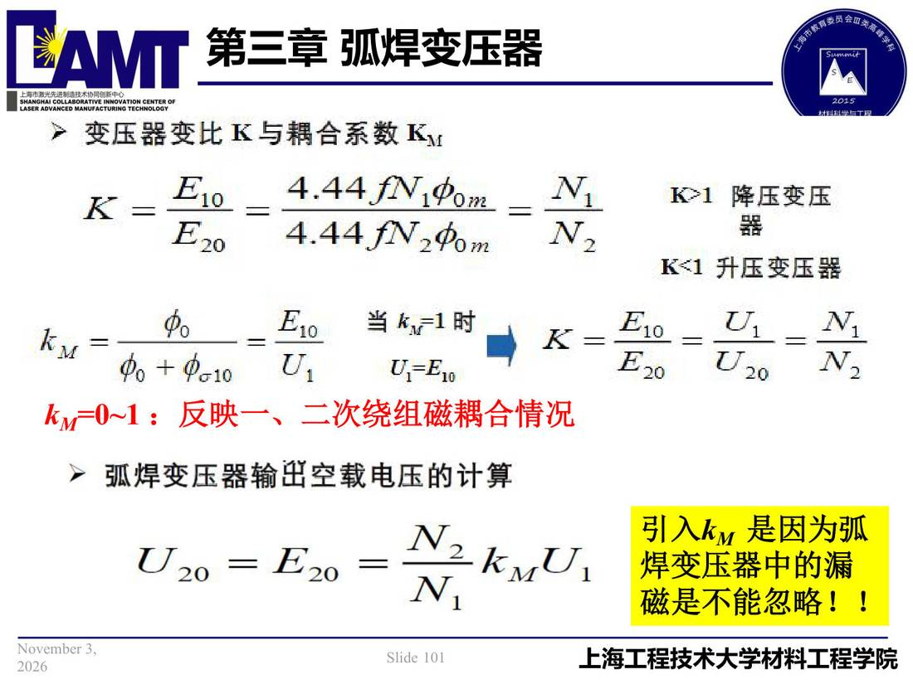

03 第3章 弧焊变压器/p101 kM=0~1：反映一、二次绕组磁耦合情况
p101 kM=0~1：反映一、二次绕组磁耦合情况
📄 原文：📄 弧焊电源 课件（PDF 第 101 页）（幻灯片 101/273；PDF 第 101 页）
kM=0~1：反映一、二次绕组磁耦合情况

讲义原文
引入kM是因为弧焊变压器中的漏磁是不能忽略！！
本页标红（老师强调）
- kM=0~1：反映一、二次绕组磁耦合情况
页面文字（OCR 机读，可能有错字，以页图为准）
＞变压器变比区与耦合系数 Ky 4.44.fN，中om= 降压变压 K<1 升压变压器 当41时 Ku= K= E=120 kM=0~1：反映一、二次绕组磁耦合情况 ▶ 弧焊变压器输出空载电压计算 U20=F20 引入kM是因为弧 焊变压器中的漏 磁是不能忽略！！